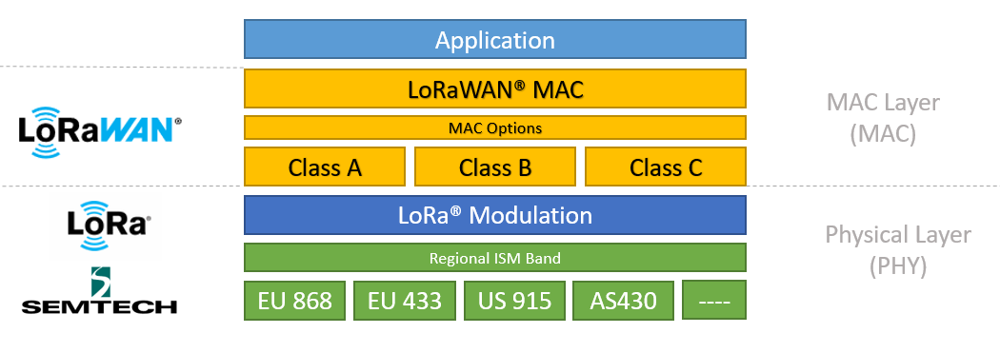
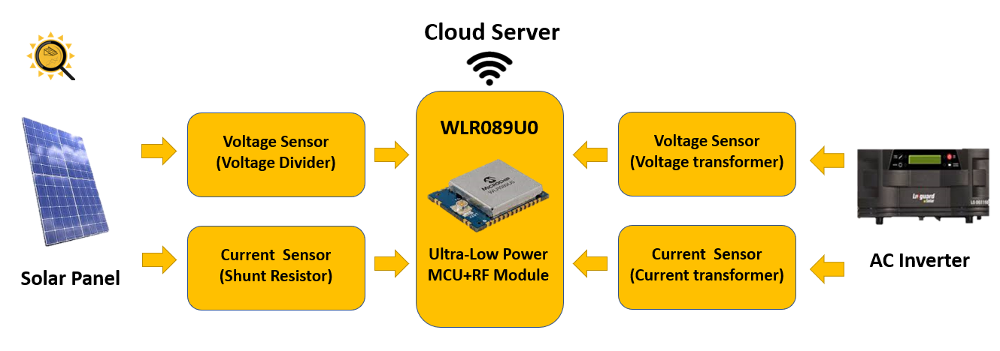
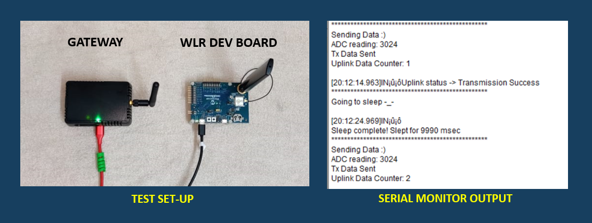
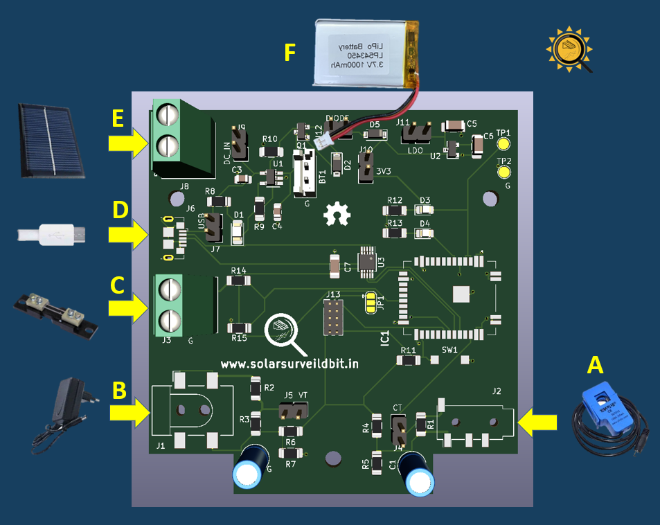

by Keith Barnes
Posted on June 06, 2021
Hello, fellow energy enthusiasts! I am glad you are here to learn more about solar energy and remote monitoring systems. In this article, we are going to start by understanding what a remote monitoring system is? what are its benefits? and gradually build up to our solution. We'll then move onto the different components involved in our solution and finally integrate all our componenets on a single PCB and test out our system.
Remote monitoring systems enable us to receive specific data about an object which might not be physically close to us.
Let's take the example of a solar RMS. Normally, we would need to manually check the solar panel voltage to make sure the system is in working order. However, installing a system that would extract these values for us and periodically transmit the data wirelessly to smartphone would aid us significantly and reduce the strain of physically monitoring the parameters of our solar system.
The data gathered by the system would help is in analysing the system's behaviour and allow to detect faults in our system. In addition to this, the data gathered would help us visualize and compare the daily electricity generation vs the consumption and hence encourage us to be more energy efficient by cutting down wasteful consumption of electricity.
The data transmission medium is an important aspect of RMS. While in some use cases transmitting data via wired connections would be feasible, most RMS employ the use of various wireless transmission methods to transfer data to remote server. In general, outdoor RMS make use of GSM/4G technologies to transmit their data.
However, these systems would not be able to successfully transmit their data if they are out the coverage area of the cellular (4G) networks. This becomes particularly evident when we move towards the more remote areas of a region. Since these regions are scarcely populated, mobile operators tend to opt out of installing antennas in such regions. Hence, we are forced to look at other technologies that are able to overcome this hurdle.
We can't rely on traditional cellular networks when trying to transmit from a remote area due to the lack of infrastructure in such areas. Hence, a of major challenge for us was to achieve long range communication without depending on traditional cellular technologies like 4G or GSM. We accomplish by means of LoRaWAN Technology.
LoRaWAN is a combination of two major concepts namely LoRa and LoRaWAN. LoRa is a modulation technique for data tranmission and LoRaWAN is a network protocol optimised for long range communication and low power consumption. To put it in simple terms, we could say that when we combine the concepts of LoRa and LoRaWAN together, we get a network that is capable of long range communication while consuming low power, and at a relatively low-cost.
I'm guessing most of you might not have heard about LoRaWAN, so I'd highly recommend you guys to go through this website in order to gain a better understanding of LoRaWAN and its use cases.
Now that we have some pre-requisite knowledge about remote monitoring systems, we can move on towards the block diagram of our system.
For this model of our PCB we wanted to monitor both the AC as well as the DC parameter of a solar system. On the left hand side is the solar panel which produces DC energy, and on the right hand side we have the inverter which is used to convert the DC energy stored in batteries into AC energy, which is ultimately supplied to our homes. We use different types sensors to extract the values of current and voltage from these devices and send it to the microcontroller.
At the centre of the diagram, you can see the WLR089U0 module by microchip. The WLR chip combines a 32-bit microcontroller and a LoRa transceiver into a single ultra-low power module. The WLR is responsible for taking the data from the various sensors, processing it and transmitting it to our remote cloud server via LoRaWAN protocol.
Now that we have an overview of the system, lets go ahead and take a look at some of the major components used in the design of our system. You can click on the component names to learn more about it.
Apart from these, you'll need some basic electronic components to fabricate the PCB. You can view can download the BOM file here.
Since our project was realized during the lockdown, our resources were limited. Nevertheless, we carried out initial tests to verify whether we were able to read data on the ADC pin and transmit it across to our server via LoRaWAN protocol.
For testing purposes we used the WLR Explained Kit by microchip and the pygate gateway by pycom. With this setup, we were able to successfully transmit ADC readings to the network server via Lorawan protocol. The network server would then forward the data onto our dashboard. The network server we used was called chirpstack, you can learn more about the server and how to set-up your own server here.
For testing purposes we set the sleep timer between transmissions to 10 secs. We used the 865Mhz frequency band for our data transmission which is a free unlicensed ISM band in India. For added data security, we implemented the OTAA activation method which is considered to be more secure compared to the ABP method. learn more.
Now that our initial tests were successful, we were confident enough to move on to the PCB desiging stage.
The above illustration depicts the WLR Board design. This board makes use of a current transformer (A) and a voltage transformer (B) to sample the AC inputs and feed it to the 12-bit ADC of the WLR chip. In addition to these , The board uses a DC shunt (C) to measure solar panel current. The board can be powered by an on-board battery (F) as well, thus making the board independent of any external power supply.
Since the board would be powered by a battery for the majority of its operation time, the board's power consumption becomes an important parameter . However, the WLR being an ultra-low power module, consumes very little energy thus increasing our battery life by upto 75 percent when compared to the ATM90/ESP boards.
The board is also equipped with a battery charging circuit. The battery can be charged Via a micro-usb cable (D) or a mini-solar panel (E) mounted onto the exterior of the PCB case. In the unfortunate case that the battery does run out of charge, We can power it via a micro-USB adapter or a power bank, and as long as we are suppling enough current, we'll be able to power the circuit as well as charge the batteries simultaneously.
This board was designed using KiCAD, an open source PCB designing software. The schematic file highlights each section of the PCB and making it easy to identify and understand the working of the different components involved. After going through the schematic you can choose to edit and alter the PCB layout or alternatively, you could directly use the gerber file to print the PCBs using various online PCB fabricators. You can click on the button below to view the KiCAD file on Github
View on GithubNote: This website is currently undergoing maintenance. Depending on the time of viewing this blog, you may find that the Github links are broken. In such case we request you to be patient,the files will be updated soon.
Once you have the PCB with all the components soldered onto it, you can proceed to upload the firmware onto the controller.
The software for the WLR was developed using the Microchip studio IDE.
You can view the firmware below
View FirmwareNote: This website is currently undergoing maintenance. Depending on the time of viewing this blog, you may find that the Github links are broken. In such case we request you to be patient,the files will be updated soon.